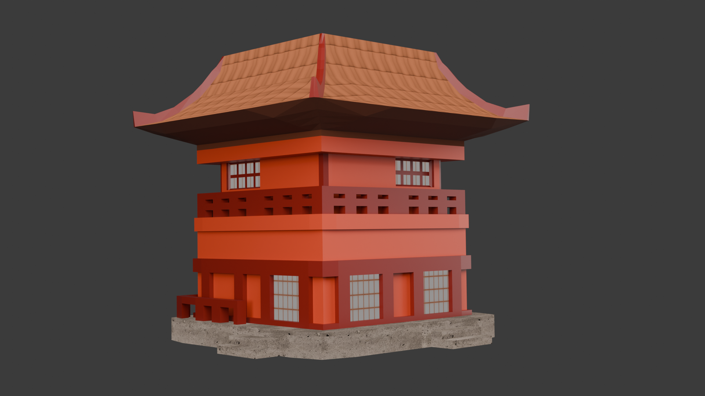

Modelado, animación y entornos estilizados para videojuegos
Personajes estilizados Modelado 3D
Escenario 3D Unity

Generación procedural Blender
Diseñadora 3D enfocada en personajes, escenarios estilizados y experiencias visuales para videojuegos.